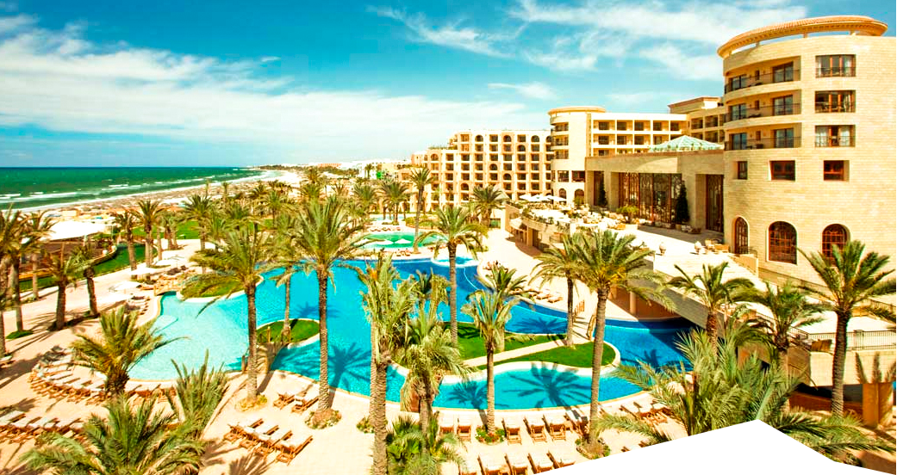
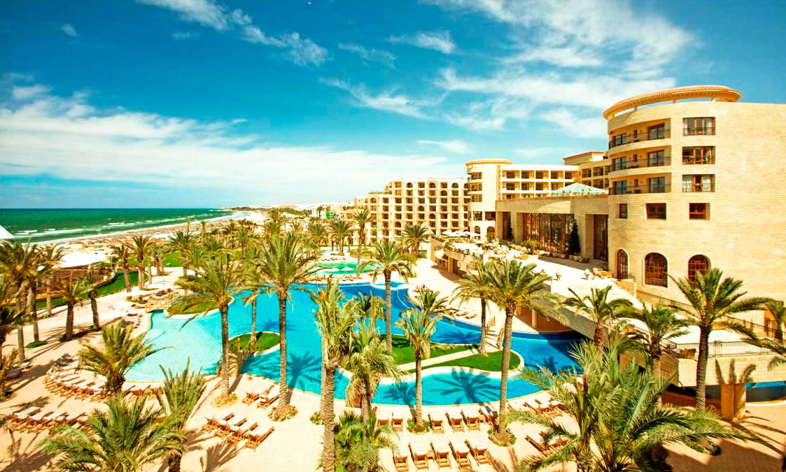
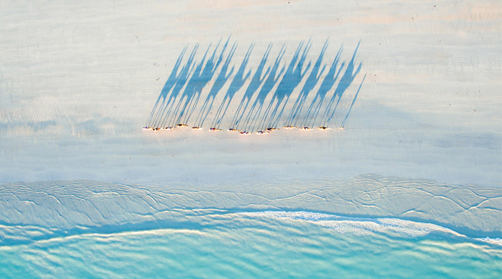
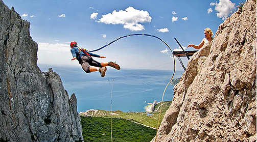

<!DOCTYPE html>
<html lang="en">
<head>
  <meta charset="UTF-8">
  <meta name="viewport" content="width=device-width, initial-scale=1.0">
  <title>Document</title>
  <link rel="stylesheet" href="styles/reset.css">
  <link rel="stylesheet" href="styles/flexboxgrid.min.css">
  <link rel="stylesheet" href="styles/main.css">
</head>
<body>

  <div class="page">

    <header class="header">
      <nav class="navbar">
        <div class="container">
          <div class="row">
            <div class="col-xs-12 col-sm-4 col-md-4 col-lg-4 center content">
              <a href="" class="logo"></a>
              <p class="text hidden-xs">Сеть турагенств «Солнце в кругу»</p>
            </div>
            <div class="col-xs-12 col-sm-8 col-md-8 col-lg-8 center content right">
              <p class="text font-big">044 123-45-67</p>
              <a class="text hidden-xs callback" href="">обратный звонок</a>
              <ul class="social-networks hidden-xs">
                <li class="facebook"></li>
                <li class="google"></li>
                <li class="instagram"></li>
              </ul>
            </div>
          </div>
        </div>
      </nav>
      <div class="container no-width">
        <div class="row">
          <div class="col-xs-12 col-sm-12 col-md-12 col-lg-12">
            <div class="card jumbotron">
              <div class="card-image">
                
                
              </div>
              <div class="bun">
                <p><strong>Тур <br> в Созополь, Болгария</strong></p>
                <p><small><small><small><small class="uppercase"><strong>КОД ТУРА</strong></small></small></small></small></p>
                <p><small><small class="code">3094119</small></small></p>
              </div>
            </div>
          </div>
        </div>
        <div class="row jumbotron-content font">
          <div class="col-xs-12 col-sm-12 col-md-7 col-lg-7">
              <div class="my-flex-container padding">
                <div class="my-flex-block">
                  <h2 class="trebuchet">Aquamarine hotel</h2>
                  <div class="stars">&#x2605;&#x2605;&#x2605;</div>
                  <p class="trebuchet price"><strong>$256</strong></p>
                </div>
                <div class="my-flex-block">
                  <div class="cell"><p>Оценка отеля</p><p>45 отзывов</p></div>
                  <div class="cell blue"><p>8.4</p></div>
                  <div class="cell"><p class="uppercase">номер</p><p>8.9</p></div>
                  <div class="cell"><p class="uppercase">питание</p><p>8.1</p></div>
                  <div class="cell"><p class="uppercase">сервис</p><p>7.9</p></div>
                  <div class="cell"><p class="uppercase">инфраструктура</p><p>8.9</p></div>
                </div>
              </div>
          </div>
          <div class="col-xs-12 col-sm-12 col-md-5 col-lg-5 hidden-xs notice">
              <p class="number trebuchet">320</p>
              <p class="text">солнечных <br> дней в году</p>
          </div>
        </div>
      </div>
      <div class="container no-width">
        <div class="row">
          <div class="col-xs-12 col-sm-12 col-md-6 col-lg-6 col-margin">
            <div class="card">
              <div class="card-image">
                
              </div>
                <div class="my-flex-container padding">
                  <div class="my-flex-block">
                    <h3 class="trebuchet">Шелковый путь</h3>
                    <p class="trebuchet price"><strong>$987</strong></p>
                  </div>
                  <div class="my-flex-block">
                    <p class="grey">Экстремальный маршрут</p>
                  </div>
                </div>
            </div>
          </div>
          <div class="col-xs-12 col-sm-12 col-md-6 col-lg-6 col-margin">
            <div class="card">
              <div class="card-image">
                
              </div>
                <div class="my-flex-container padding">
                  <div class="my-flex-block">
                    <h3 class="trebuchet">Не дай Бог не любишь</h3>
                    <p class="trebuchet price"><strong>$59</strong></p>
                  </div>
                  <div class="my-flex-block">
                    <p class="grey">Роупджампинг</p>
                    <p class="line-through grey">$90</p>
                  </div>
                </div>
            </div>
          </div>
        </div>
      </div>
    </header>

    <main>
      <article class="article">
        <div class="container">
          <div class="row">
            <div class="col-xs-12 col-sm-12 col-md-12 col-lg-12">
              <h1 class="trebuchet">36,6 градусов по цельсию и познавательная физика</h1>
            </div>
          </div>
          <div class="row">
            <div class="col-xs-12 col-sm-12 col-md-9 col-lg-9">
              <p class="text"><strong>Никто не задумывался почему температура человеческого тела 36,6 С? Почему не иная? Почему не равна
                дневной температуре окружающего пространства к примеру? Но почему так произошло? Первая причина лежит
                от нас на временной оси в прошлом на расстоянии в несколько миллиардов лет. Именно тогда появилась жизнь.</strong></p>
              <p class="text">Грубо говоря первичные репликаторы огородились защитной оболочкой от остальной части океана — создав
                клетки. Клетки это замкнутые водные резервуары, в которых вся жизнедеятельность проходит в водной среде.
                И все сухопутные организмы концептуально это машины выживания репликаторов, мобильная (в случае с животными),
                благоприятная водная среда для репродукции, окруженная защитной оболочкой от внешнего мира.</p>
              <h3>Ищем ответ</h3>
              <p class="text">Что интересно, все теплокровные функционируют в пределах той же области температур что и человек.
                Например температура у лошадей 37,5-38,5; у коров 37,5-39,5; кур 40,5-42,5; свиней 39,0-40,0; кошек
                38,0-39,5; обезьян 38,1; голубей 41,0-44,0. Ответ лежит в области нет, не биологии. А в области физики воды.</p>
              <div class="text">
                <p class="answer">Дело в том, что теплоемкость воды нелинейно зависит от температуры. Теплоемкость это количество энергии,
                  которое необходимо потратить для того что бы нагреть 1 кг вещества на 1 градус. При увеличении температуры
                  она как бы пикирует как штурмовик, и возносится ввысь после прохождения нижней точки в 36,8 градусов Цельсия.
                  В организме человека вода составляет около 65-70%, её теплоемкость огромна.
                </p>
              </div>
              <p class="text">90% энергии получаемой с пищей, теплокровные потому тратят только лишь на поддержание постоянной
                температуры внутренней среды. На нагревание воды. Потому эта ямка, минимум, в котором нужно было
                тратить минимальное количество энергии на поддержание своего состояния, как аттрактор, стягивал на себя
                на протяжении эволюции все «модели» теплокровных. Фенотипы, с рабочей температурой иных диапазонов были
                слишком «прожорливыми» и отсеивались отбором.</p>
              <h4>Хлорофилл и красота</h4>
              <p class="text">Могло случится так что небо было бы ядовито-желтое а не голубое. Трава так же красная.
                Нравился бы нам такой пейзаж? Почему красный, ярко-желтый, создают чувство неспокойствия и не подходят
                для идилических райских картин ландшафтов как голубой и зеленый? Дело не в них а в нас. Мы продукт
                эволюции, продукт среды в которой мы развивались. Что и было показано на примере температуры тела.
              </p>
              <p class="text">Начну с далека, так уж нужно, ничего не поделаешь… Зеленым цветом на картинке окрашена трава, трава
                это растение. Первыми вышли задолго до животных на сушу растения. Они сформировали то первичное
                окружение для живых организмов, создали им условия существования на суше. Стали источником пищи и
                крова, ведь животные гетеротрофы. Растения же в основном автотрофы. Так вышло что у растений при участии
                хлорофилла осуществляется процесс фотосинтеза. А по совместительству он так же зелёный пигмент,
                обусловливающий окраску хлоропластов растений в зелёный цвет.</p>
              <div class="hidden-xs">
                <p>Так же интересна физическая причина наших понятий красоты.</p>
                <table></table>
              </div>
              <div class="text">
                <p class="title">Как найти эти консервативные признаки? Наиболее часто рассматривают 5 источников информации о них:</p>
                <ul class="list">
                  <li>— эмбриологические исследования;</li>
                  <li>— тератологические данные;</li>
                  <li>— сравнительно-морфологические данные;</li>
                  <li>— анализ врожденных поведенческих программ (этологические данные);</li>
                  <li>— изучение взаимосвязи с другими видами.</li>
                </ul>
              </div>
            </div>
            <div class="col-xs-12 col-sm-12 col-md-3 col-lg-3 hidden-xs notice">
              <p class="number">0,71</p>
              <p class="text">WHR здоровой женщины</p>
              <p class="grey">Один из весьма надежных оказателей здоровья, фертильности, как раз и является «waistto hip ratio».</p>
            </div>
          </div>
        </div>
      </article>
    </main>

    <footer class="footer">
      <div class="container">
        <div class="row">
          <div class="col-xs-12 col-sm-12 col-md-12 col-lg-12 center">
            <p class="content red"><strong>Я потратил на этот макет: 10 часов</strong></p>
          </div>
        </div>
        <div class="row">
          <div class="col-xs-12 col-sm-12 col-md-12 col-lg-12">
            <div class="border"></div>
          </div>
        </div>
        <div class="row">
          <div class="col-xs-12 col-sm-4 col-md-4 col-lg-4 center">
            <p class="content">Тестовое задание на вакансию верстальщика в компанию Fleeks</p>
          </div>
          <div class="col-xs-12 col-sm-8 col-md-8 col-lg-8 center wrap">
            <ul class="social-networks content">
              <li class="facebook"></li>
              <li class="google"></li>
              <li class="instagram"></li>
            </ul>
          </div>
        </div>
      </div>
    </footer>

  </div>

  <script src="scripts/main.js"></script>
</body>
</html>
